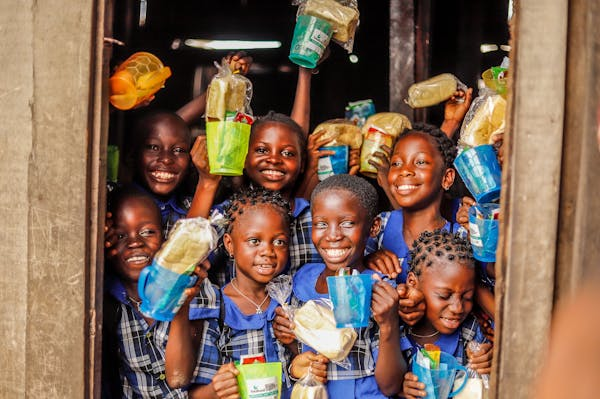

Welcome To Food Salvage
Join our community in reducing food waste and helping those in need.
Our Mission
At Food Salvage, our mission is to combat food waste and hunger by creating a sustainable, tech-driven platform that bridges the gap between food surplus and food scarcity. Through our innovative Food Waste Management App, we aim to connect restaurants, grocery stores, food suppliers, and individuals with excess food to charities, food banks, and organizations dedicated to feeding the hungry. We envision a world where no edible food goes to waste while millions face food insecurity. Our app fosters a community-driven approach, encouraging businesses and individuals to play an active role in reducing environmental impact, supporting social welfare, and promoting responsible consumption. By streamlining the donation process, enhancing real-time communication, and providing logistical support, we make it simple, efficient, and rewarding for everyone involved to contribute to the fight against hunger and food waste. At the core of Food Salvage is the belief that food is a basic human right, not a privilege. We are committed to driving change through technology, advocacy, and collaboration, inspiring a global movement towards zero food waste and ensuring that surplus food reaches those who need it most. Together, we can create a more compassionate, environmentally conscious, and food-secure world.
How It Works
Share Excess Food
Donate your excess food to those who need it most
Make An Impact
Make a positive impact in your local area. Coordinate pickups,reduce food waste, and help communities in need
Reduce Food Waste
Contribute to a more sustainable Environment.
Available Food

Milk
Quantity: 20 satchet
Distance: 1 Mile

Rice
Quantity: 10 Bags
Distance: 1 Mile

Bread
Quantity: 5 Loaves
Distance: 1 Mile
Canned Food
Quantity: 10 cans
Distance: 1 Mile
Vegetables
Quantity: 10 bunches
Distance: 1 Mile
Beans
Quantity: 10 Bags
Distance: 1 Mile
Rice
Quantity: 10 Bags
Distance: 1 Mile
Milo
Quantity: 10 satchet
Garri

Quantity: 10 Bags
Distance: 1 Mile

Yam
Quantity: 10 Tubers
Distance: 1 Mile
Pasta
Quantity: 10 Packs
Distance: 1 Mile
Community Impact
10000
Food Shared
6000
Ibs of Food Waste Reduced
2000
Active Users
What Our Community Says
"Thanks to Food Salvage, we've been able to feed more families than ever before. The quick notifications and easy coordination with donors have made our food distribution more efficient. It's a lifesaver for those we support."
— Desireoluwa L., Coordinator at Take A Bite Restaurant
"I can't express how grateful I am for Food Salvage. The food donations we've received have helped us get through tough times. It's more than just food; it's hope and kindness from people who care."